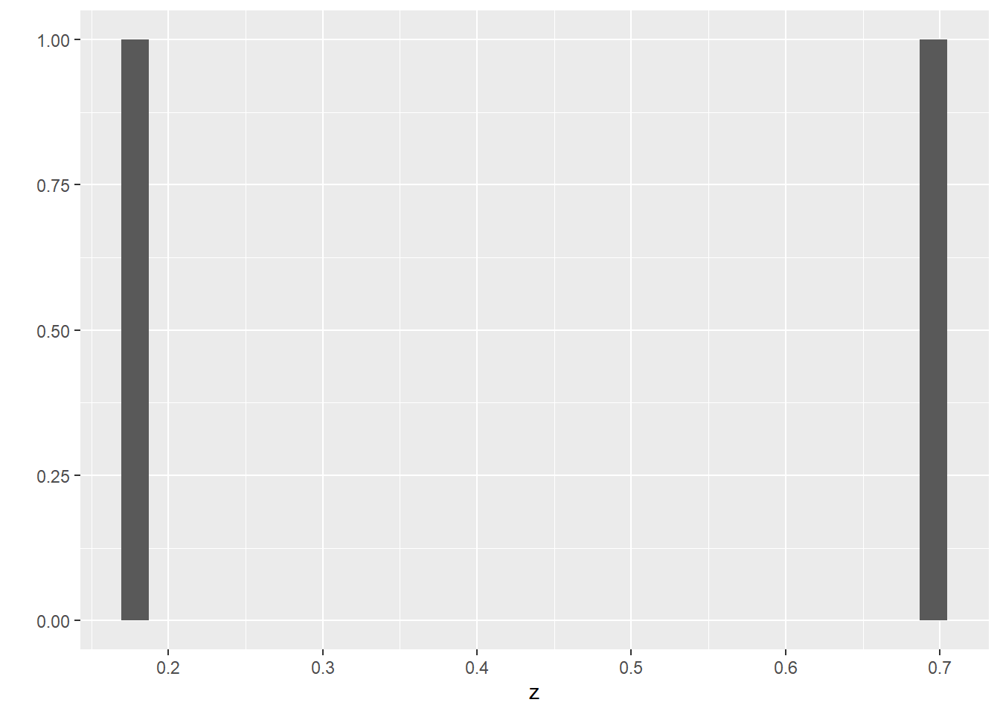

Problem 1
#a.
x = 1.1
a = 2.2
b = 3.3
z=x ^ (a^b)
print(z)## [1] 3.61714# result of z was 3.61714012551594#b
x = 1.1
a = 2.2
b = 3.3
z=(x^a) ^ b
print(z)## [1] 1.997611#c.
x = 1.1
a = 2.2
b = 3.3
z= 3*(x^3) + 2*(x^2) + 1
print(z)## [1] 7.413Problem 2 #a
vector_a<-c(1:8,7:1)
print(vector_a)## [1] 1 2 3 4 5 6 7 8 7 6 5 4 3 2 1#b
vector_b <- rep(x=1:5,times=1:5)
print(vector_b)## [1] 1 2 2 3 3 3 4 4 4 4 5 5 5 5 5vector_c <- rep(x=5:1,times=1:5)
print(vector_c)## [1] 5 4 4 3 3 3 2 2 2 2 1 1 1 1 1Problem 3
library(ggplot2)
set.seed(2)
z <- runif(2)
qplot(x=z)## Warning: `qplot()` was deprecated in ggplot2 3.4.0.
## This warning is displayed once every 8 hours.
## Call `lifecycle::last_lifecycle_warnings()` to see where this warning was
## generated.## `stat_bin()` using `bins = 30`. Pick better value with `binwidth`.
x=0.185
y=0.701
r= sqrt(x^2+y^2)
print(r)## [1] 0.7250007theta=atan(y/x)
print(theta)## [1] 1.312771#observation that tan^1=atan function
queue <- c("sheep", "fox", "owl", "ant")
z2 <- c("sheep"=1, "fox"=2, "owl"=3, "ant"=4)
print(z2)## sheep fox owl ant
## 1 2 3 4#a
queue <- c("sheep", "fox", "owl", "ant", "serpent")
z2 <- c("sheep"=1, "fox"=2, "owl"=3, "ant"=4, "serpent"=5 )
print(z2)## sheep fox owl ant serpent
## 1 2 3 4 5#b
z2 <- c("fox"=1, "owl"=2, "ant"=3, "serpent"=4 )
print(z2)## fox owl ant serpent
## 1 2 3 4#c
z2 <- c("donkey"=1, "fox"=2, "owl"=3, "ant"=4, "serpent"=5 )
print(z2)## donkey fox owl ant serpent
## 1 2 3 4 5#d
z2 <- c("donkey"=1, "fox"=2, "ant"=3)
print(z2)## donkey fox ant
## 1 2 3#e
z2 <- c("sheep"=1, "fox"=2, "ant"=3, "serpent"=4 )
print(z2)## sheep fox ant serpent
## 1 2 3 4#f
z2 <- c("sheep"=1, "fox"=2, "aphid"=3, "ant"=4, "serpent"=5 )
print(z2)## sheep fox aphid ant serpent
## 1 2 3 4 5#g
# Third position x<-1:100
which(x%%2!=0 & x%%3!=0 & x%%7!=0)## [1] 1 5 11 13 17 19 23 25 29 31 37 41 43 47 53 55 59 61 65 67 71 73 79 83 85
## [26] 89 95 97